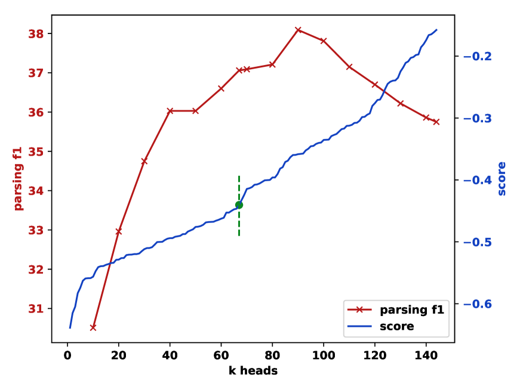

A fully unsupervised constituency parsing method that ranks and ensembles transformer self-attention heads based on their inherent syntactic properties, achieving competitive parsing performance without any labeled data or development set, while also enabling analysis of the implicit grammars learned by pre-trained language models.

Constituency parsing — decomposing a sentence into nested sub-phrases such as noun phrases (NP), verb phrases (VP), and prepositional phrases (PP) — is fundamental to understanding sentence structure. Traditional supervised parsers require expensive treebank annotations such as the Penn Treebank (PTB), which contains roughly 40,000 hand-annotated sentences of Wall Street Journal text. Unsupervised parsers attempt to recover this hierarchical structure without labeled data, but have historically lagged far behind their supervised counterparts.
Meanwhile, probing studies have revealed that pre-trained language models (PLMs) like BERT encode surprisingly rich syntactic information in their internal representations. A natural question arises: can we directly extract parse trees from PLM attention patterns, rather than merely probing for syntactic features? Prior work by Kim et al. (2020) showed that individual BERT attention heads can produce constituency trees, but required a labeled development set to select the best head — a critical limitation that undermines the unsupervised premise.
Key Gaps Addressed by This Work:
This paper addresses all four gaps by proposing a method that (1) directly extracts constituency trees from attention patterns, (2) requires no development set or labeled data, (3) works across different PLMs and languages, and (4) enables grammar-level analysis through induced PCFGs. The key insight is that syntactic information is distributed across many attention heads, and that an unsupervised criterion based on tree structure quality can identify and combine the most informative ones.
The approach consists of three stages: computing span scores from attention matrices, ranking and selecting the most syntactically informative heads without supervision, and constructing trees via a greedy top-down algorithm. An optional fourth stage induces explicit grammars for analysis purposes.
For each attention head h at layer l, the method computes a syntactic affinity score for every possible text span (i, j) in a sentence of length n. Given the attention matrix A of shape n × n, the span score captures how much tokens within the span attend to each other versus tokens outside it. Formally, for a span from position i to j, the score is computed as the ratio of intra-span attention mass (total attention that tokens in positions i..j pay to other tokens in i..j) to the total attention from those tokens. High scores indicate that the tokens form a self-contained attention cluster, which is the expected signature of a syntactic constituent — words within a phrase like “the big red ball” should attend primarily to each other.
This score is computed for all O(n2) possible spans in the sentence, yielding a complete span score chart for each attention head. The chart is analogous to the chart used in CKY parsing, but here the scores come from pre-trained attention patterns rather than learned grammar rules.
Not all attention heads encode syntax — many attend to positional patterns (e.g., attending to the previous or next token), punctuation, or semantic relations. The paper introduces an unsupervised ranking criterion based on the structural properties of each head's induced trees.
The criterion measures the branching entropy of the trees a head produces across a corpus: a head that always produces left-branching trees (equivalent to always splitting off the first word) or always right-branching trees (splitting off the last word) receives a low score, because such trees are trivially degenerate and carry no real syntactic information. In contrast, a head whose trees exhibit varied, non-trivial branching patterns — sometimes splitting left, sometimes right, depending on the actual sentence structure — receives a high score, as this variability indicates genuine sensitivity to syntax.
The top-K heads (typically K = 5–15) are then ensembled by averaging their span scores element-wise, creating a robust composite signal that benefits from complementary syntactic information across different heads and layers. This ranking requires no labeled data or development set — only unlabeled text from the target domain.
Given the ensembled span scores, a greedy top-down algorithm recursively builds the constituency tree. Starting from the full sentence span (1, n), the algorithm finds the split point k that maximizes the sum of the scores of the two resulting sub-spans: score(1, k) + score(k+1, n). It then recurses on each sub-span, continuing until reaching individual tokens (spans of length 1).
This produces an unlabeled binary constituency tree. The algorithm has O(n2) time complexity per sentence (linear scan for the split point at each level of recursion), making it highly efficient compared to chart-parsing approaches. The resulting trees are binarized — each internal node has exactly two children — which is standard for evaluation against gold-standard binarized trees from the PTB.
As an additional analysis tool, the induced parse trees are used as supervision to train a neural PCFG (Probabilistic Context-Free Grammar) following the compound PCFG framework of Kim et al. (2019). The neural PCFG learns explicit production rules (e.g., S → NP VP, NP → DT NN) with associated probabilities, parameterized by neural networks.
This allows quantitative comparison of the implicit grammars captured by different PLMs: by training separate PCFGs on trees induced from BERT, GPT-2, XLNet, etc., one can compare the resulting rule distributions against the human-annotated grammar from the PTB. The comparison reveals which phrase types each model captures well (e.g., NPs vs. VPs), which constructions are problematic, and how the implicit grammars of different PLM architectures systematically differ.
The method is evaluated on the WSJ10 (sentences ≤ 10 words) and WSJ test sets (section 23, all lengths) from the Penn Treebank, comparing against both traditional unsupervised parsers and PLM-based approaches. Multiple PLMs are tested, including BERT (base/large, cased/uncased), GPT-2, XLNet, and RoBERTa. All results use unlabeled F1 as the evaluation metric.
| Method | WSJ10 F1 | WSJ Test F1 |
|---|---|---|
| PRPN (Shen et al., 2018) | 70.5 | 38.3 |
| ON-LSTM (Shen et al., 2019) | 65.1 | 47.7 |
| URNNG (Kim et al., 2019) | 73.6 | 51.6 |
| Single Best Head (oracle) | — | 52.1 |
| Heads-up! (Ours, BERT-base) | 69.5 | 49.4 |
| Heads-up! (Ours, BERT-large) | 71.3 | 50.8 |
Note that the “Single Best Head (oracle)” result requires a labeled development set to identify which head is best — making it not truly unsupervised. The proposed method achieves 50.8 F1 with BERT-large without any such supervision, closing the gap to within 1.3 F1 of the oracle head selection.
| Pre-Trained Model | WSJ Test F1 | Total Heads | Selected K |
|---|---|---|---|
| BERT-base-cased | 49.4 | 144 | ~10 |
| BERT-base-uncased | 48.2 | 144 | ~10 |
| BERT-large-cased | 50.8 | 384 | ~15 |
| GPT-2 | 40.1 | 144 | ~10 |
| XLNet-base | 45.7 | 144 | ~10 |
| RoBERTa-base | 47.3 | 144 | ~10 |
Where does syntax live in PLMs?
The head ranking analysis reveals a clear pattern across all tested models:
The neural PCFG analysis yields insights into how different PLMs conceptualize sentence structure:
This work makes several important contributions at the intersection of unsupervised parsing and PLM interpretability: